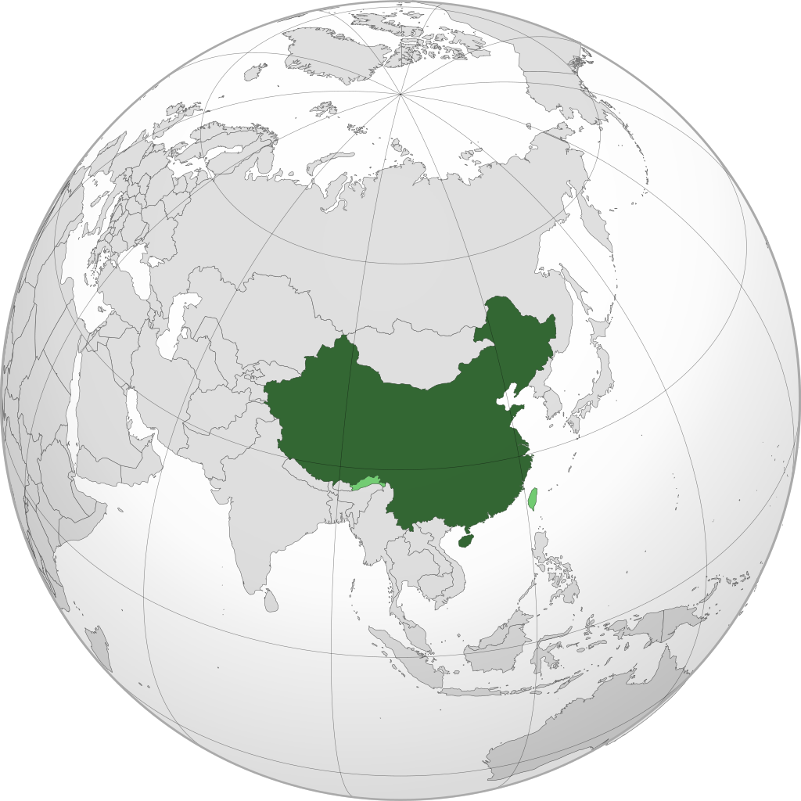

Es un país soberano de Asia Oriental. Es el país más poblado del mundo, con más de 1400 millones de habitantes, y la primera potencia económica mundial por PIB en términos de paridad de poder adquisitivo.1819La República Popular China es, después de Rusia, el segundo país más grande de Asia.

La República Popular China es un Estado socialista gobernado por el Partido Comunista de
China desde 1949
Gastronomía de China
Un conjunto de platos típicos de la cocina
china en la ciudad Suzhou,
provincia Jiangsu,con cuencos de arroz,
camarones, berenjena, y tofú fermentado,
vegetales, pato, y una
fuente central con carne y brotes de bambú
En la cocina china los palillos se emplean como utensilios o cubertería para comer alimentos sólidos. Se puede comprobar que los palillos de madera están cediendo su uso debido a la escasez de madera y a la excesiva tala de árboles en China y en el este de Asia, muchos chinos en la actualidad comen en los establecimientos públicos con palillos hechos de bambú o de plástico que respetan más el medioambiente
El clima de China está dominado en gran parte por la estación seca y los monzones, que provocan una pronunciada diferencia de temperaturas entre el invierno y el verano. En invierno, los vientos del norte que provienen de latitudes más altas son secos y fríos; en verano, los vientos del sur que provienen de las zonas costeras son cálidos y húmedos.227El clima varía de región a región debido a la compleja orografía del país, aunque se pueden diferenciar en tres grandes zonas. La zona monzónica del este, en el que hay un clima húmedo; la zona seca del noroeste, donde el clima es seco; y al sur, en la meseta del Tíbet, el clima es frío.228El clima de las montañas se caracteriza por una gran cantidad de lluvias, particularmente entre los 600 y los 2000 m s. n. m., donde las precipitaciones suelen estar por encima de los 1000 mm, aunque a partir de los 1000 m s. n. m. son en forma de nieve.